- 1.저 달
- 2. 대취타
- 3. 어떻게 생각해
- 4. 이상하지 않은가 (feat. RM)
- 5. 점점 어른이 되나봐 (feat. 나화)
- 6. Burun it (feat.MAX)
- 7. 사람
- 8. 혼술
- 9. Interlude: Set me free
- 10. 어땠을까? (feat. 김종완 of NELL)
Yeah, yeah
Okay, okay, okay, okay
Yeah
3년이 지났네
Agust D
솔직히, 몇 곡 넣을지 잘 모르겠어 걍
씨, 걍 하는 거지 뭐
Ok, ok, alright, here I go, ok (Yo, yo, yo)
시작은 초라했지 대구 그래 남산동 지하
에서 이제는 펜트하우스 한남 더힐 ha
아직도 꿈에서 깨지 못하는 피터팬
내 머릿속 현실은 이상과 싸워 지겹게
내 가장 큰 적은 속 안의 화
그보다 더 지독한 내 안의 게으름과의 싸움
가끔씩 신께 원망해 왜 이런 삶을 살게 한 지
내가 뭐를 하는지 음악은 사랑하는지
가끔씩 되물어 돌아갈 수만 있음
돌아갈 거냐고 글쎄 그건 고민 좀
내가 가진 게 쉽게 얻은 것 같다가
시발 개고생 한 거 보상받는 것 같다만
난 아직 고파 이게 업보인가
존나 높게 나니 느껴지는 공허함
남산동에서 시작한 지 10년은 더 지났지만
그때랑 똑같네 머리가 복잡한 건 fuck that
새벽에 맞는 저 달빛
여전히 그때와 같네
내 삶은 많은 게 변했지만 뭐
저 달빛은 여전히 그대로라고
새벽에 맞는 저 달빛
여전히 그때와 같네
변화는 모두에게 필연적이지
어떻게 변해가는지가 우리의 업일지도
가끔씩 내가 천재인 것 같다가도
가끔씩 내가 재능이 없는 것 같기도 해
어떨 땐 곡이 미친듯이 나오다가 다시
막힐 때는 한없이 또 막히더라구 맞아 지금도
(Verse 1) 은 존나 빠르게 썼는데도
(Verse 2) 는 진짜 안 나오네 쥐어짜도
인생도 마찬가지겠지 모 아니면 도
어차피 평행은 없어 선택의 문제라고
영원은 존재하지 않겠지 그 무엇도
불멸의 존재는 존나게 부담스럽고
그냥 음악이 좋아서 시작한 게 단데
내게 붙이는 수식어들은 가끔은 버겁네
어쩌겠어? 그냥 달려야지 뭐
어쩌겠어? 꽉 쥔 건 잡아야지 뭐
어쩌겠어? 받은 건 갚아야지 뭐
부딪힐 것 같으면 더 세게 밟아 임마 (Oh yeah)
새벽에 맞는 저 달빛
여전히 그때와 같네
내 삶은 많은 게 변했지만 뭐
저 달빛은 여전히 그대로라고
새벽에 맞는 저 달빛
여전히 그때와 같네
변화는 모두에게 필연적이지
어떻게 변해가는지가 우리의 업일지도
명금일하대취타 하랍신다
예이
Yeah, uh
대취타 대취타 자 울려라 대취타
대취타 대취타 자 울려라 대취타
대취타 대취타 자 울려라 대취타
대취타 대취타 자 울려라 대취타
대취타 대취타 자 울려라 대취타
빛이 나 빛이 나 내 왕관이 빛이 나
잊지 마 잊지 마 지난 날을 잊지 마
We so fly, we so fly 전세기로 we so fly, yeah
Mhm 종놈 출신에 왕된 놈
미쳐버린 범 광해 flow
개천 출신에 용 된 몸
그게 내가 곧 사는 법
미안 걱정은 말라고
나도 잃을 건 많다고
과건 뒤주에 가두고
내 걸 챙겨 다 잠수부
말이 안되지 (Yeah, mm) 내가 개라니 yeah
범으로 태어났지 적어도 너처럼 약하진 않지
좆밥들의 걍 재롱잔치
솔까 존나게 어이없지
싹 다 죽여 난 예의 없이
새꺄 그래 너 예외없이
Flexing 난 없지, 필요가 없지
Who's the king, who's the boss?
다 알잖아 내 이름
입만 산 새끼들
당장 놈의 목을 쳐 (Ah!)
대취타 대취타 자 울려라 대취타
대취타 대취타 자 울려라 대취타
대취타 대취타 자 울려라 대취타
대취타 대취타 자 울려라 대취타
대취타, 대취타
대취타 대취타 자 울려라 대취타
대취타 대취타 자 울려라 대취타
한탕 해 먹고 곧바로 난 전세기로 날아
나를 담기엔 이 나란 아진 여전히 작아 yeah
Ooh 누가 시간은 금이래
내 시간은 더 비싼데
Tik Tok 선비새끼들
면상에다 침을 칵 뱉어
꺾인 적이 없는 매출출출출출출출
우리 방시혁 피디는 매일 춤춤춤춤춤춤춤
참 감사하네 내가 천재임에
고작 그런 이유로 약을 빨다니 애잔하기 그지없네 재능이 없는거지 뭐
원하는 건 모두 가졌지 이제는 뭘 더 가져야만 만족이 될지
내가 원했던 것 옷 옷 다음은 돈 돈 다음은 goal, goal 이 다음은 도대체 뭐지
그 다음은 그래 뭘까 심히 느껴지는 현타 위가 없는 현상
위만 보던 난 이제 걍 아래만 보다가 이대로 착지하고파
I'm a king, I'm a boss
새겨놓아 내 이름
입만 산 새끼들
당장 놈의 주리를 틀어
I'm a king, I'm a boss
다 알잖아 내 이름
입만 산 새끼들
당장 놈의 목을 쳐
대취타 대취타 자 울려라 대취타
대취타 대취타 자 울려라 대취타
대취타 대취타 자 울려라 대취타
대취타 대취타 자 울려라 대취타
대취타 대취타
대취타 대취타 자 울려라 대취타
대취타 대취타 자 울려라 대취타
어떻게 생각해 어떻게 생각해
어떻게 생각해 어떻게 생각해
어떻게 생각해 어떻게 생각해
어떻게 생각하던지 난 미안한데 시발 좆도 관심없네
미안 좆도 관심없네 니 인생이 어중간한 것도
니가 망해서 똥통을 벗어나지도 못하는 것도
내 성공이 니 실패와 연관이 있다고 생각하다니
착각이 수준급이군 좆도 (좆도)
개그감들이 so-so 니가 좆된 것은 니 탓이지 no-no?
이 노랠 듣는 좆 들은 뭐 개빡쳐서 졸도
빠꾸없이 또 직진 난 전세계 so fly huh
굳이 하지 않아 난 flexing but 전세기 so fly
다 해먹어 하나씩 ey 우리가 여태 하듯이
밥풀이 붙었던 것 정돈 신경 안쓰니
알아서 떨어졌던 것처럼 다 싸그리 go fuck yourself huh
어떻게 생각해요 (어떻게 생각해요)
어떻게 생각해 (어떻게 생각해요)
빌보드 1위, oh no, 어떻게 생각해 (yeah yeah)
그 다음은 그래미 (그래미) 어떻게 생각해 (yeah yeah)
어떻게 생각하던지 난 미안한데 시발 좆도 관심없네 (관심없네)
어떻게 생각해 (어떻게 생각해요)
어떻게 생각해요 (어떻게 생각해요)
어떻게 생각해요 (어떻게 생각해요)
어떻게 생각해 (어떻게 생각해)
어떻게 생각해요 (어떻게 생각해)
어떻게 생각해요 (어떻게 생각해요)
어떻게 생각하든지 난 미안한데 시발 좆도 관심없네 (uh)
내 통장에 0 열 개들은 청춘을 담보로 한 돈
I got a big house, big car, big ring
뭐든지 가져와봐 줄게 내 black card
미디어의 혜택을 받은 새끼들은 나보다 방송을 많이 타고
돈 자랑하는 애새끼들 벌어봤자 얼마나 벌었겠냐 싶어
Woo woo 그래 이제 돈 자랑들은 뭐 귀엽지
Woo woo 분배는 니 급 쯤에서나 아깝지 (아깝지)
Woo woo 군대는 때 되면 알아서들 갈테니까
우리 이름 팔아먹으면서 숟가락을 얹으려고 한 새끼들 싸그리 다 닥치길 (ah)
I don't know, I don't know, I don't know, I don't know
이쯤 되면은 알 필요 없지
아이돌음악이 음악이냐는 말들에는 좆도 관심이 없지 (없지)
마지막 선물이 되겠지만 이것 또한 너희들에게는 사치 (사치)
높게 높게 더 높게 쳐다도 못볼만치 uh
어떻게 생각해요 (어떻게 생각해요)
어떻게 생각해 (어떻게 생각해요)
빌보드 1위, oh no, 어떻게 생각해 (yeah yeah)
그 다음은 그래미 (그래미) 어떻게 생각해 (yeah yeah)
어떻게 생각하던지 난 미안한데 시발 좆도 관심없네 (관심없네)
어떻게 생각해 (어떻게 생각해요)
어떻게 생각해요 (어떻게 생각해요)
어떻게 생각해요 (어떻게 생각해요)
어떻게 생각해 (어떻게 생각해)
어떻게 생각해요 (어떻게 생각해)
어떻게 생각해요 (어떻게 생각해요)
어떻게 생각하든지 난 미안한데 시발 좆도 관심없네 (uh)
Everything in dust
Do you see? well, well, well
Everything in lust
What do you see? well, well, well
누가 알려줘 삶이란 고통인지
Well, well
신이 있다면 알려줘 삶이란 행복인지 yeah yeah
세상이란 커다란 시스템
그 안에 대립과 전쟁이 아니면은 서바이벌을 투입해
거부할 수 없는 삶
자본은 꿈을 담보로 희망이라는 모르핀은 주입해
부는 부를 창궐하고 탐을 시험해
부자는 가난조차 탐해 탐욕스럽게
세상은 흑과 백 둘만 존재해
끝이 없는 제로섬 게임 속 끝은 볼만해
양극화 세상에서 가장 추한 꽃
진실은 거짓에게 잠식된지 오래군
가장 이득을 보는 건 누굴까?
가장 피해를 보는 것은 도대체 누굴까요?
병든 세상에 병들지 않은 자
되려 돌연변이 취급해 이상하지 않은가 uh
눈 감은 세상에서 눈 뜬 자
이젠 눈을 멀게 하네 이상하지 않은가 uh
평화를 원하는 자 싸움을 원하는자
각자 이념의 끝 이상하지 않은가 uh
꿈을 가지라네 다 꿈이 없음에도 다
정답은 없네 이상하지 않은가 uh
Everything in dust
Do you see? well, well, well
Everything in lust
What do you see? well, well, well
누가 알려줘 삶이란 고통인지
Well, well
신이 있다면 알려줘 삶이란 행복인지
You think you got taste?
Oh baby, how do you know?
I mean for God's sake
Everything's under control
몇지선다를 주곤 자본이 통제하는 취향
People talk
'내 피드가 설명해주지 날'
돈 얼마를 쥐었건 다 이 시스템의 slave
자랑하기 바쁜 개 목걸이와 개집
종일 누구 게 반짝이나 싸우네
이제는 너도 모를 걸
Oh baby, what's your name? (name)
양극화 이미 활짝 피어버린 꽃
네모난 구멍에 박혀버린 동그란 못
그래도 굴러가 어떻게든 또 이렇게
다 각자의 닭장에서 괜찮다 하네
병든 세상에 병들지 않은 자
돌연변이 취급하는 게 이상하지 않아 난 더
눈 감은 세상에서 눈 뜬 자
혼자만 눈 떴다는 게 훨씬 이상해 난 huh
평화를 원하는 자 싸움을 원하는 자
손바닥 뒤집듯 바뀌는 말장난 huh
꿈은 옵션이 된 그런 세상인데
정답은 없어 그게 정답이야 uh
Everything in dust
Do you see? well, well, well
Everything in lust
What do you see? well, well, well
누가 알려줘 삶이란 고통인지
Well, well
신이 있다면 알려줘 삶이란 행복인지
나이를 먹어가고
세상을 알아가네
그럼에도 세상을 모르는 게 더 약이었을까
불이 꺼진 방 안과는
전혀 다른 야경을 바라보며
낮게 읊즈린 말
점점 어른이 되나 봐 (봐)
기억이 안 나 (나)
내가 바란 것들은 무엇이었나
나 (나) 이제는 겁나 (나)
내 꿈의 파편들은 어디로 갔나
숨은 쉬는데
심장은 고장이 난 것 같은데
그래 이젠 말야 꿈을 쥐는 게
버겁기만 한 어른이 되는 게 어른이 되는데
Oh no, 스물이 되면 바뀔 줄 알았지
졸업을 하면 바뀔 줄 알았지
Shit 그렇게 렇게 서른이면
그래 그래서 나는 뭐가 바뀌었지
가끔씩 덜컥 이유 없이 눈물이 쏟아져
내가 바란 삶 내가 원한 삶 그저 그런 삶
뭐가 됐든 이젠 상관없지
하루라도 막 걱정 없이
하루라도 막 고민 없이
사는 게 사는 게 사는 게
점점 어른이 되나 봐 (봐)
기억이 안 나 (나)
내가 바란 것들은 무엇이었나
나 (나) 이제는 겁나 (나)
내 꿈의 파편들은 어디로 갔나
숨은 쉬는데 (숨은 쉬는데)
심장은 고장이 난 것 같은데 (난 것 같은데)
그래 이젠 말야 꿈을 쥐는 게
버겁기만 한 어른이 되는 게 (oh) 어른이 되는데 oh no
I see the ashes falling out your window
(Ya) there's someone in the mirror that you don't know (ya)
And everything was all wrong (ya, all wrong)
So burn it till it's all gone
Yeah yeah yeah burn it (burn it)
내 안의 소리
Yeah yeah yeah burn it
I want it, want it, want it whoa
Yeah yeah yeah burn it
내 안의 소리
Yeah yeah yeah burn it
I want it, want it, want it whoa
돌아가 보자고 지난날 ey
나를 파괴하던 시간과 ey
시기 증오 혹은 열등감
한들에게 사로잡힌 삶 ey
성공을 맛본 후 지난 난 ey
그때 와는 뭐가 다른가 ey
글쎄 크게 다르진 않아 ey
태워버리자고 지난 나
가장 깊은 곳 밑바닥까지 남김없이 또 타겠지
불을 붙여 더 불을 붙여 뭐 끝엔 뭐가 또 남을지
I don't know, I don't know eh 다 태우고 나면 뭐 이씻
재만 남을지도 모르지 (모르지) 아님 그대로일지 yeah
I see the ashes falling out your window
There's someone in the mirror that you don't know
And everything was all wrong yeah
So burn it till it's all gone
Yeah yeah yeah burn it (burn it)
내 안의 소리
Yeah yeah yeah burn it (burn it)
I want it, want it, want it whoa
Yeah yeah yeah burn it (yeah)
내 안의 소리
Yeah yeah yeah burn it
I want it, want it, want it whoa
Burn it burn it yeah burn it burn it
가장 깊은 곳의 너를 마주하지
치부 혹은 증오 혐오 분노까지
그것 또한 얼마나 되려 허망한지
어쩌면 그것들은 맞아 신기루
어쩌면 그래 그것들을 빌미로
열정을 강요받는 것은 아닌지
초심이란 단어를 조심하길 바래 don't be afraid
불을 붙여봐 불을 붙여봐
뭐가 됐든 그래 말야 새꺄 불을 붙여봐
과거의 너 현재의 너
뭐든 좋으니까 새끼야 그래 불을 붙여봐
타오르는 태양이 될는지
아니면은 타고남은 재가 될는지
언제난 선택과 결정은 너의 몫
과감한 포기 또한 용기임을 잊지 말기를 yeah
I see the ashes falling out your window
There's someone in the mirror that you don't know
And everything was all wrong
So burn it till it's all gone
Yeah yeah yeah burn it (burn it)
내 안의 소리
Yeah yeah yeah burn it (burn it)
I want it, want it, want it whoa
Yeah yeah yeah burn it (yeah)
내 안의 소리 (내 안의 소리)
Yeah yeah yeah burn it
I want it, want it, want it whoa (want it whoa)
Yeah, yeah, yeah 산들바람 (바람)
스쳐가는 사람 (사람)
스며드는 사람 (사람)
나는 어떤 사람 (사람)
나는 좋은 사람? (사람)
아님 나쁜 사람? (사람)
평가는 가지각색 yeah yeah
그냥 나도 사람 eh
다들 살아가겠지 yeah
다들 사랑하겠지 yeah
다들 바래가겠지 yeah
Yeah yeah 잊혀가겠지 yeah
사람들은 변하지 (변하지) 나도 변했듯이
세상살이 영원한 건 없어
다 지나가는 해프닝
음 음 음 음 why so serious? (why so serious?)
Why so serious? (why so serious?) why so serious? (why so)
음 음 음 음 I'm so serious? (I'm so serious?)
I'm so serious? (I'm so serious?) I'm so, I'm so
뭐 어때
스쳐 지나가면 뭐 어때 yeah yeah
뭐 어때
상처받으면 뭐 어때 yeah yeah, yeah yeah
뭐 때론 또 아플지도
가끔은 속상해 눈물 흘릴지도 ooh
뭐 어때
그렇게 살면 뭐 어때 yeah yeah, yeah yeah
물이 흘러가는 대로 흘러가
저기 끝은 뭐가 있을지도
특별한 삶 평범한 삶 그 나름대로
좋은 게 좋은 거지 뭐
좋은 게 좋은 거지
뜻대로만 되지 않지
불편은 다들 감수하지
극적인 상황들의 반복은 삶을 지치게도 해
사람들이 그런거지
없으면 있고 싶기도 있으면 없고 싶기도
누가 사람이 지혜의 동물이라 했나
내가 보기에는 후회의 동물이 분명한데
사람들은 변하지 (변하지) 너도 변했듯이
세상살이 영원한 건 없어
다 지나가는 해프닝
너의 평범함은 되려 나의 특별함
너의 특별함은 되려 나의 평범함
나의 평범함은 되려 너의 특별함
나의 특별함은 되려 너의 평범함
뭐 어때 (oh)
스쳐 지나가면 뭐 어때 (어때) yeah yeah (yeah yeah)
뭐 어때
상처받으면 뭐 어때 yeah yeah, yeah yeah
뭐 때론 또 아플지도
가끔은 속상해 눈물 흘릴지도 ooh
뭐 어때
그렇게 살면 뭐 어때 yeah yeah, yeah yeah
오늘도 하루 일과
마치고 바로 귀가
방문을 들어서면은
온전히 나를 마주하는 시간
적막이 가득 한 방
샤워를 끝마친 다음
술로 해독하네
기억 잘 안 나는 하루의 마침표는 술일지도
고단한 하루 일과는 어찌어찌 해냈고 uh
골 빠개지는 일정은 일주일에 음 셋 넷쯤 uh
적당히 먹고 자지 뭐 어차피 잠도 안 오는데
내일 일은 내일 걱정하지 뭐 fuck, I don't care
Now I'm feelin' like I'm flyin'
Ah-ah, ah-ah
Now I'm feelin' like I'm flyin'
Ah-ah, ah-ah
안주는 안 먹게 되네 뭘 집어넣음 토할 거 같아서
취기가 올라오니까 솔직해져 보자 내 삶에 관해서
Oh yeah 돈, 명예, 부
트로피와 스타디움도
가끔씩 무섭고
막 도망쳐버리고 싶더라고 (Mhm)
슈퍼스타가 되면 매일 파티를 하며 사는 줄
이상은 현실의 뒤통수를 시원하게 갈기는 중
상관없어 어차피 뭐
내일은 다시 오고 저물어
이런 나도 저런 너도
하루를 버텨내는 거지 뭐
Now I'm feelin' like I'm flyin'
Ah-ah, ah-ah
Now I'm feelin' like I'm flyin'
Ah-ah, ah-ah
Set me free, yeah
내 마음대로 안될 걸 다 알면서 (알면서), 음
Set me free (set me free), yeah
그게 내 맘이 아니란 걸 알면서 (알면서)
Oh, no no no
Set me free
난 자유롭게 허공에 떠있네
Set me free
요즘 기분이 왜인지 꿀꿀해
내 하루는 바닥에서 기고
또 하루는 창공에서 나네
왜 왜
Set me free, yeah
내 마음대로 안될 걸 다 알면서, 음
Set me free (set me free), yeah
그게 내 맘이 아니란 걸 알면서
Oh, no no no
Set me free, yeah
Set me free, yeah
Set me free, yeah (set me free)
Set me free, yeah (set me free)
Set me free
아직도 여전히
니가 난 그립고 또 그립네
아직도 여전히
함께한 추억이 날 맴도네
어쩌면 그때 널 잡았다면
아니 그때 너를 막았다면
아직도 여전히
우리는 아직도 친구일까 어땠을까
Dear my friend 어떻게 지내니 넌
나는 뭐 잘 지내 알다시피 뭐 응 yeah
Dear my friend 나 솔직히 말할게
난 니가 존나게 미워 아직도 yeah
여전히 기억해 함께였었던 지난 날
대구로 함께 놀러갔었던 우리 시간과
수많은 날 둘이면 세상도 무섭지 않아
말하던 우린 지금 전혀 딴 길을 걷지 damn
그때 기억나? 아마 신사였나
둘이서 소주를 기울이며 나눴던 우리 대화
세상을 씹어 먹을 거라던 우리 둘의 포부
원대한 꿈을 품었었던 우리는 어렸었지 꼴랑 나이 스물이야
Ey 갑작스러웠던 연락두절
한참이 지난 뒤 모르는 번호로 왔었던 너의 부모님의
그 짧은 전화 한 통에 곧바로 달려가 봤지
서울 구치소 안양은 너무 멀었지
아직도 여전히
니가 난 그립고 또 그립네
아직도 여전히
함께한 추억이 날 맴도네
어쩌면 그때 널 잡았다면
아니 그때 너를 막았다면
아직도 여전히
우리는 아직도 친구일까 어땠을까
니가 변한 건지 아니면 내가 변한 건지 uh
흐르는 시간조차 미워 우리가 변한 거지 뭐
야 니가 밉다, 야 니가 싫다
야 이 말을 하는 이 순간조차 난 니가 그립다
Ey 매주 갔었던 서울 구치소 면회 길
왕복 세 시간쯤 됐었던 먼길을 혼자서 나섰지
너의 재판 날과 너의 출소 날
눈이 펑펑 오던 겨울 흰 두부 똑똑히 기억나
그리고 간만에 본 넌 전혀 딴 사람이 돼버렸고
눈이 풀린 채 넌 말했지 그래 해 볼 생각이 없냐구
난 화가 났고 또 욕을 했네
유일한 친구였던 너를 되돌릴 방법은 없고 너는 괴물이 돼버렸네
내가 알던 넌 없고 널 알던 난 없어
우리가 변한 건 비단 시간 때문이 아닌 걸 난 알아
니가 알았던 난 없고 내가 알았던 넌 없어
우리가 변한 건 비단 시간 때문이 아닌 걸 덧없어
아직도 여전히
니가 난 그립고 또 그립네
아직도 여전히
함께한 추억이 날 맴도네
어쩌면 그때 널 잡았다면
아니 그때 너를 막았다면
아직도 여전히
우리는 아직도 친구일까 어땠을까
아직도 여전히
니가 난 그립고 또 그립네
아직도 여전히
함께한 추억이 날 맴도네
어쩌면 그때 널 잡았다면
아니 그때 너를 막았다면
아직도 여전히
우리는 아직도 친구일까 어땠을까
(Oh oh oh, oh oh oh)
(Oh oh oh, oh oh oh)
(Oh oh oh, oh oh oh)
(Oh oh oh, oh oh oh)
어땠을까
Photo


 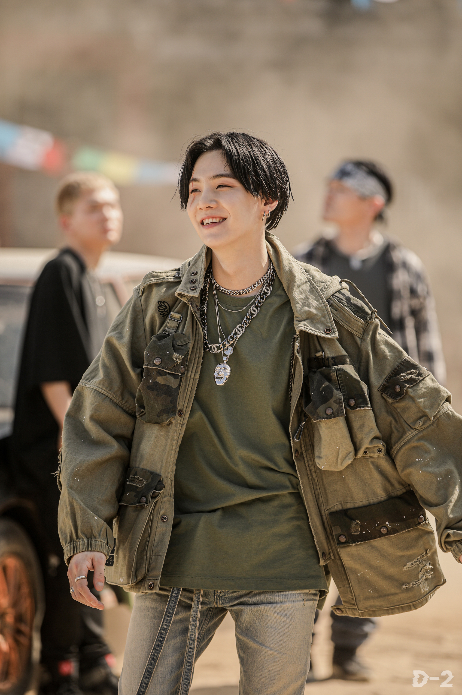
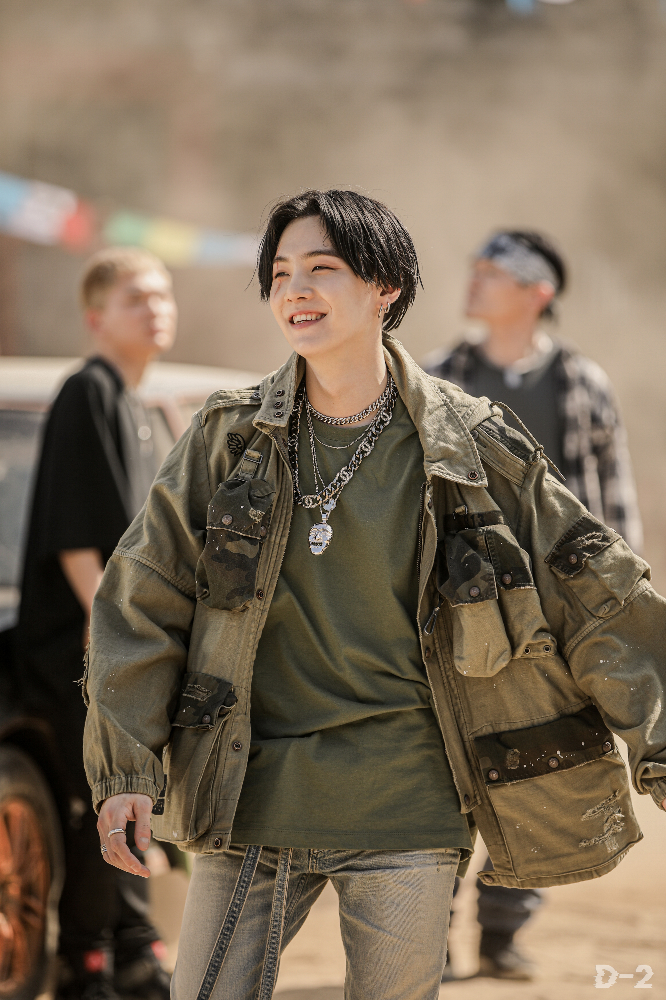
 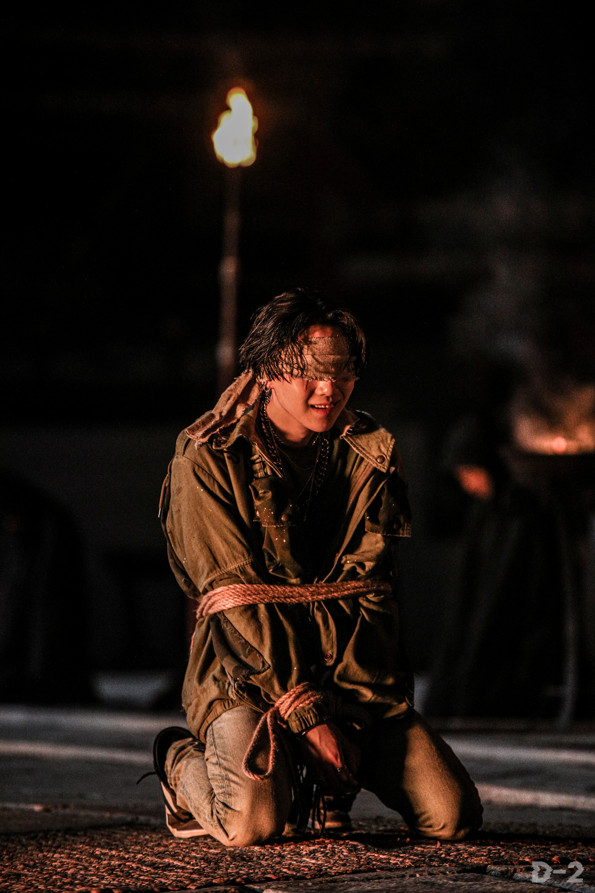
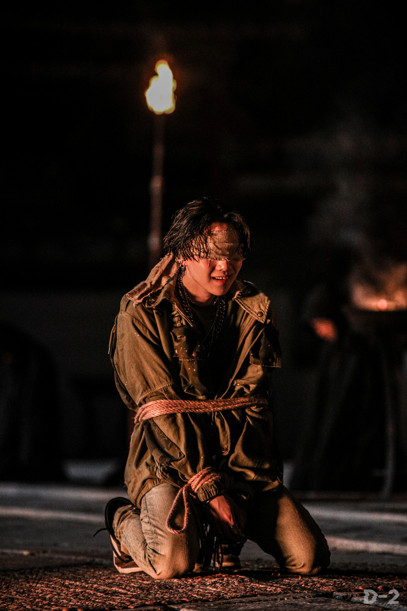


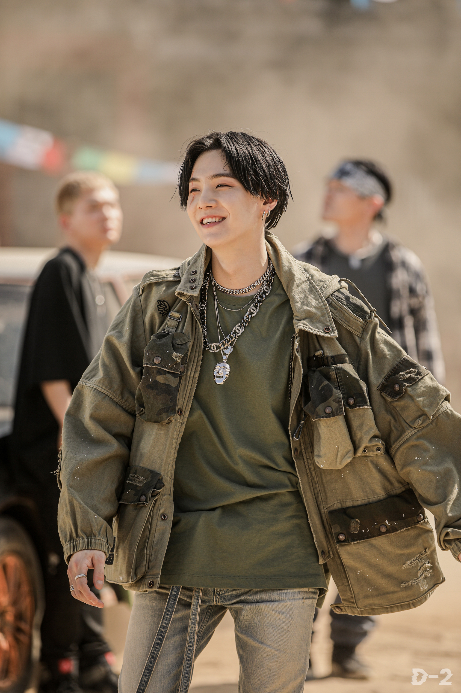
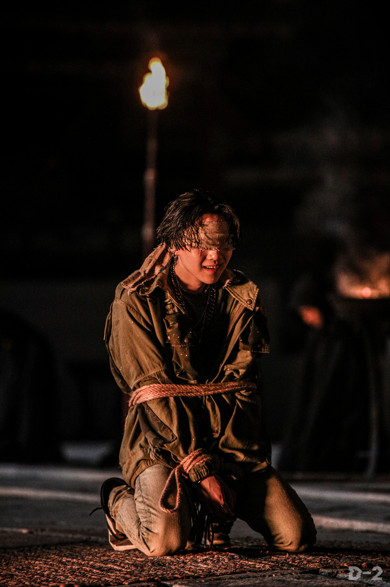
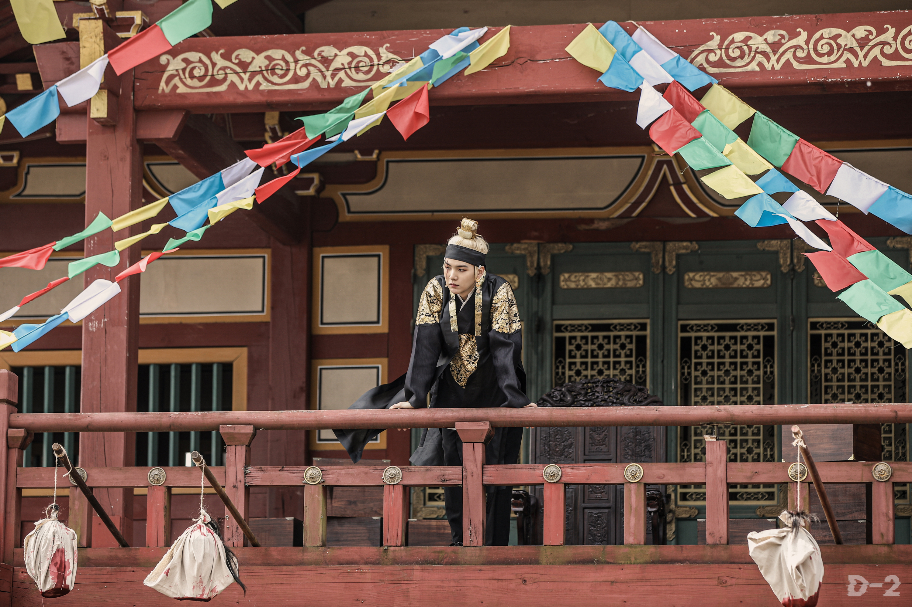
 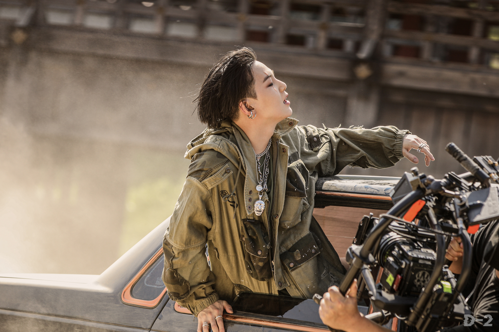
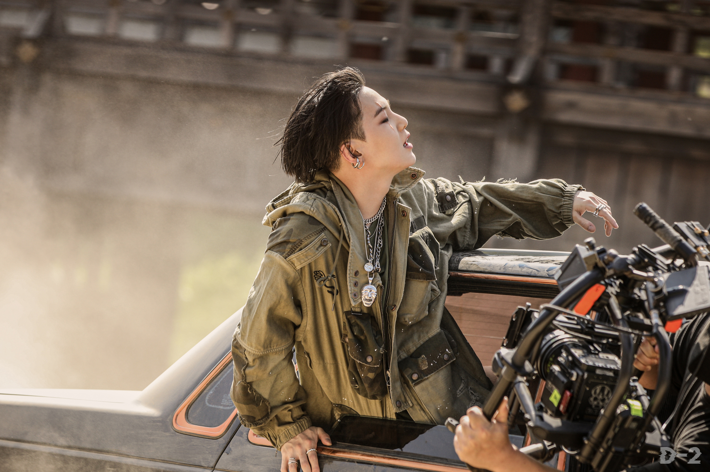
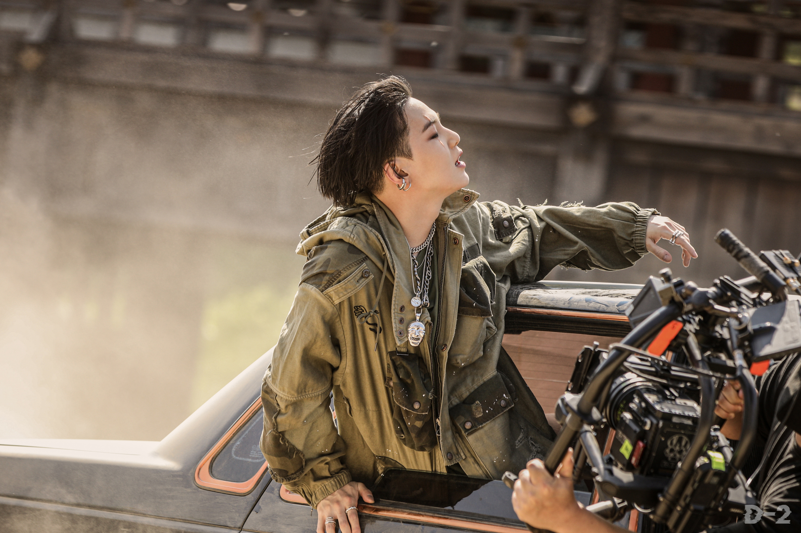
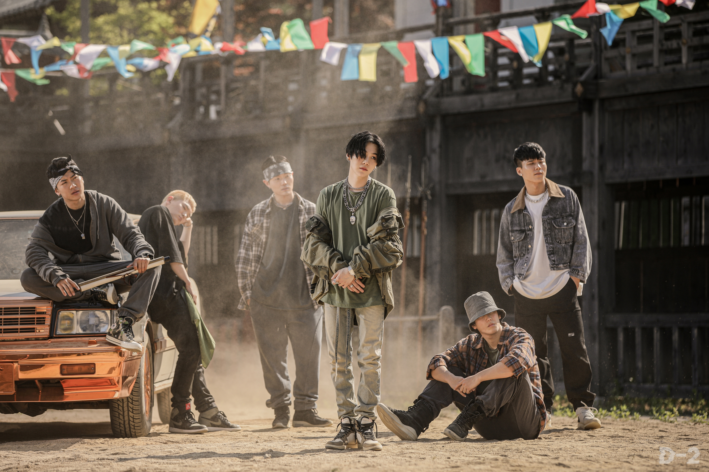